前言
本文旨在介绍可视化作图过程中使用的基本元素，简单分析不同数据类型适合使用何种图形进行展示。通过了解这些基本元素，我们可以实现以下两个目的：
- 更好地解读图片传递的信息
- 判断图表质量的好坏
在理解了基本元素的基础上，我们能够更好地设计图表，从而更高效直观地向读者传递我们的结论。
用于数据可视化的基本图形元素
Marks and Channels
一张数据可视化图（特指将数据用图的形式展示出来）中的元素，基本可以分成下面提到的两大类。即使是较为复杂的图，也能拆分成诸多基本元素的组合。
其中第一类称为 Mark（标记），是一张图中的基本图形元素。 Mark根据其维度可以细分为三种：
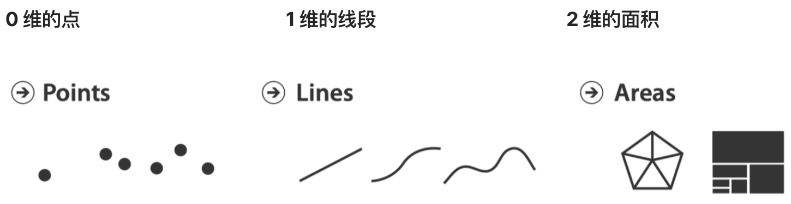
第二类元素是 Channel（通道），指用于控制 Mark 如何呈现在图中的变量。 通道可以分为以下几种：
- 位置
- 颜色
- 形状
- 斜率
- 大小（长度、面积、体积）
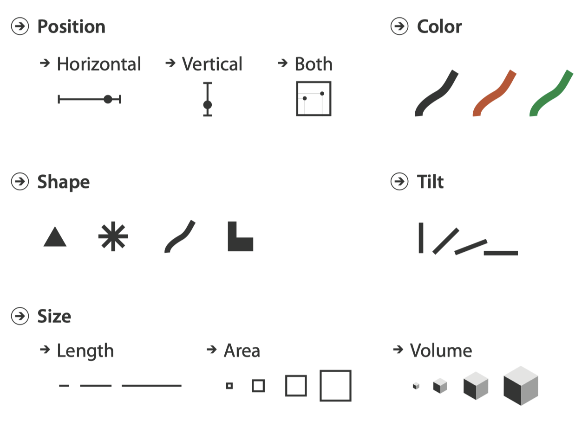
这样讲非常抽象，来几个具体的例子：
- a 图，使用线段作为 Mark（柱状图就是些粗了点的线段），Channel 是长度，所以当我们在看柱状图时，比较的实际是不同线段（柱子）的长度
- b 图，用点作为 Mark，Channel 是点在图上的位置，每个点都有其坐标 (x,y)
- c 图，在 b 图的基础上，增加了一个颜色 Channel，用这个通道将点分成了红蓝两组
- d 图，在 c 图的基础上，又增加了面积作为 Channel 控制点的大小，额外编码了一个变量
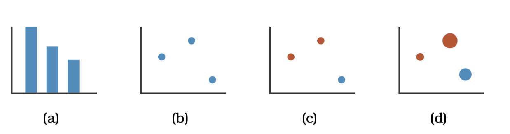
以此可见，无论复杂还是简单的图，都是通过 Marks 与 Channels 的适当组合得到的。
Channel Rankings
在画图的时候，一次必然不会用到全部的上述元素。由于各种 Channel 传递信息的效果并不一致，要想让你的图更为直观，需要选择恰当的元素表现方式。
下图展示了不同类型的数据，用不同 Channel 进行表达时，其效果的优劣，越靠上的 Channel 越便于读者理解。
有顺序的数据（比如一组有大有小的测量值）应当以左边这组形式呈现，类别数据（比如野生型和突变体这两组材料）应当以右边的形式呈现。
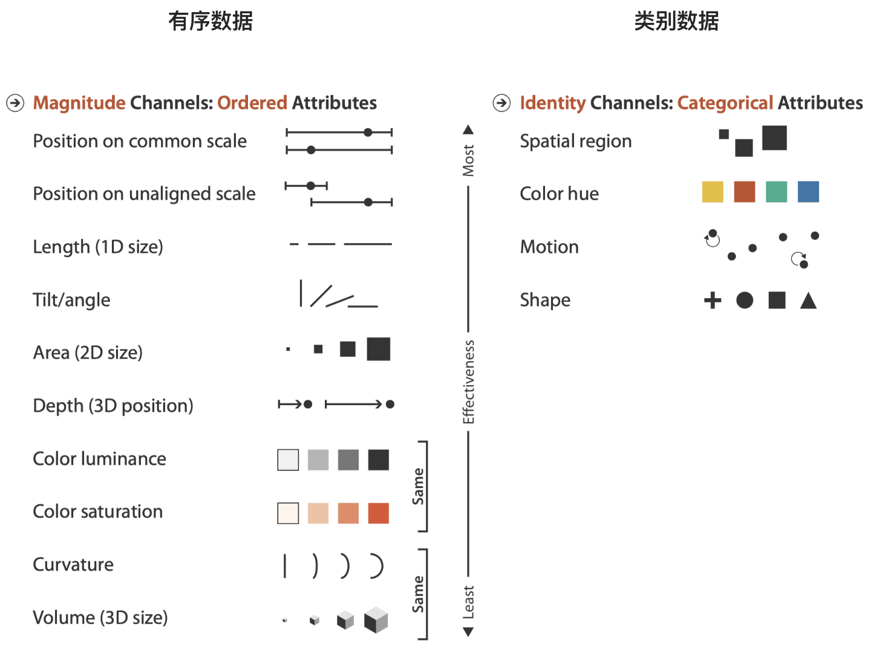
对于两类数据，效果最好的都是空间位置。我们来看一组例子，体会一下不同数值编码方式传递信息的效率差异。
浏览下面的每一张图，快速判断图中的数据能分为几组。
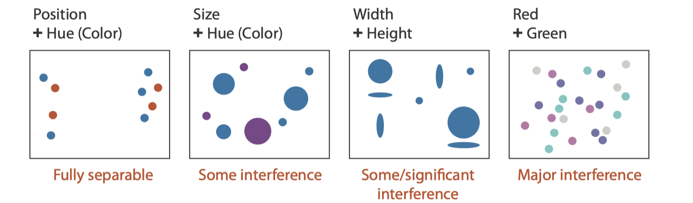
- 第一的图，用位置+颜色编码，很容易将点进行分组。
- 第二张图，用大小+颜色编码，稍微混乱了一些，但还算可以分辨。
- 第三张图，该分成三组还是四组？这张图采用宽度+高度编码，还算可以分辨，但由于我们通常感知面积快于形状，所以矮宽/高瘦的椭圆形可能在直觉上会被归为一组，于是图中四组容易被认作大中小的三组。
- 第四张图，只用颜色进行编码，非常混乱，实际也是四组。
不同数据类型与其适合的展示方式
One quantitative value
首先是一维数据，只有一组连续值，我们希望展示这组数据的分布情况。如果只用平均值、标准差来描述，可能会损失很多信息，便可以考虑用直方图或密度图来展示。
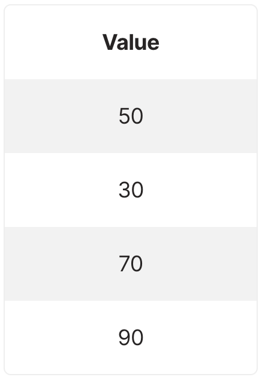
直方图（Histogram）
直方图（Histogram）是展示 连续数据分布情况 最常用的工具，它划分好一组区间，将落到每个区间中值的个数进行统计并绘图，使用线条的长度来编码数据。由于直方图需要对连续型数据做离散分组，因此它有一个明显的缺点，就是它的形状依赖于分组的端点，例如若有好几个相同的数值正好处在分组端点上，那么我们只要稍微向左或向右移动一下分组端点，这些数据点就会被划分入不同的区间，导致矩形条的高度变化。
- Mark: line
- Channel: length
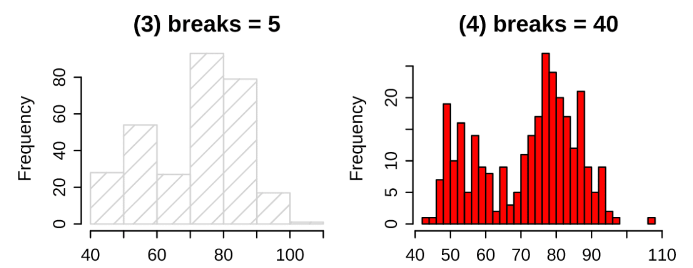
密度图（Density plot）
密度图利用核密度估计，对原始数据估计其密度函数，相比直方图对数据的描述更加准确。然而其边界处可能由于边界效应与实际情况不符。
- Mark: line
- Channel: position
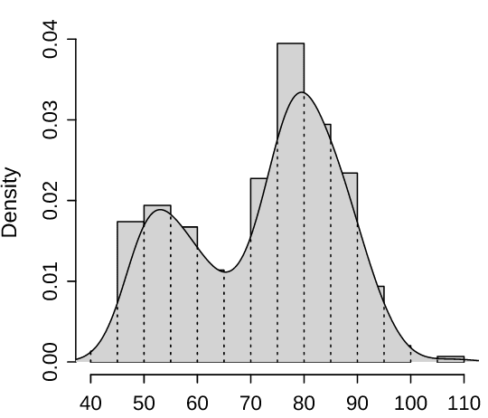
Two quantitative values
当面对二维连续值的情况，比一维稍微复杂一点，可以用散点图展示它们之间的关系。
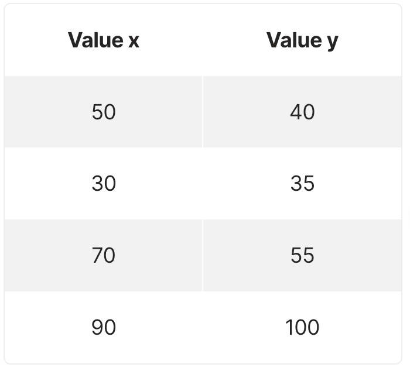
散点图（Scatter plot）
散点图展示 两个变量之间的关系 ，这种关系可能是线性或非线性的。图中每一个点的横纵坐标都分别对应两个变量各自的观测值，因此散点所反映出来的趋势也就是两个变量之间的关系。
- Mark: point
- Channel: position
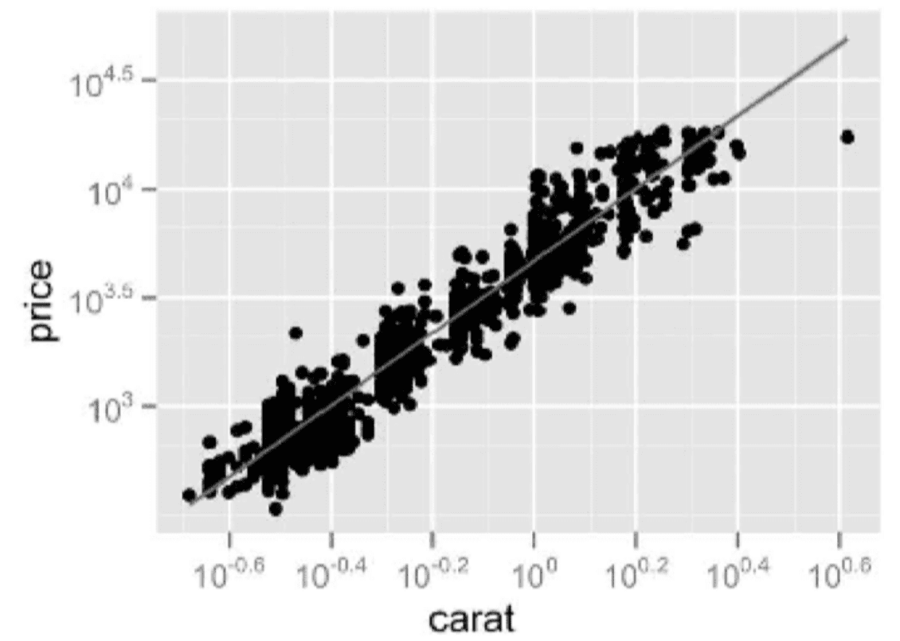
One key, one value
假如一张表是这样的：
- 能够定位到某个表格位置的变量称作 Key，这通常是我们统计对象的某个属性，比如某个材料的名称；
- 表格中某个格中具体的值被称为 Value
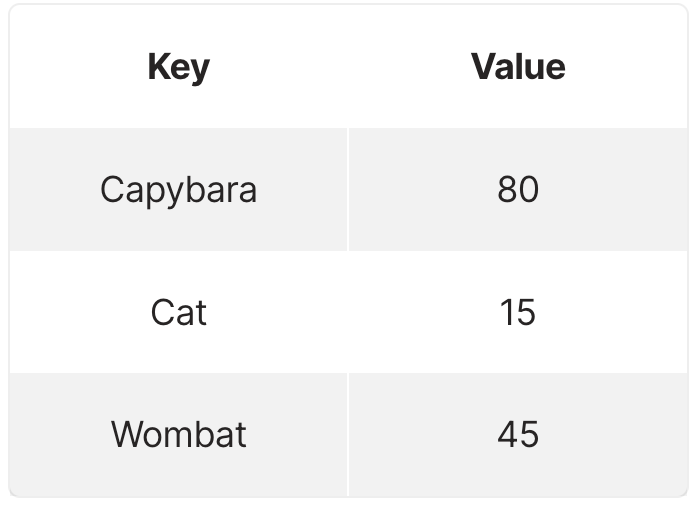
柱状图（Bar chart）
柱状图可能是我们最熟悉的图形之一，目前是各种统计图形中应用最广泛的，但柱状图使用统计后的数据（平均值、标准差）进行作图，所能展示的统计量比较贫乏：只能以矩形条的长度展示原始数值，对数据的分布几乎没有任何展示。
比如在下图中，因为展示的是每个动物的平均质量，如果不加误差线，我们既不能看出它的变异程度，也看不到这些数据的分布。
- Mark: lines
- Channel: position, length
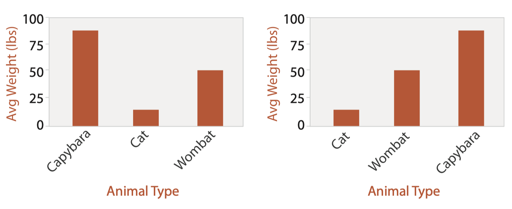
箱线图（Box plot）
统计（平均值、标准差）后画出的柱状图损失了太多信息，相比之下，直接用原始数据画出的箱线图呈现了 更详细的数据分布情况 ，并允许数据中包含异常值。
- Mark: line, point
- Channel: position, length
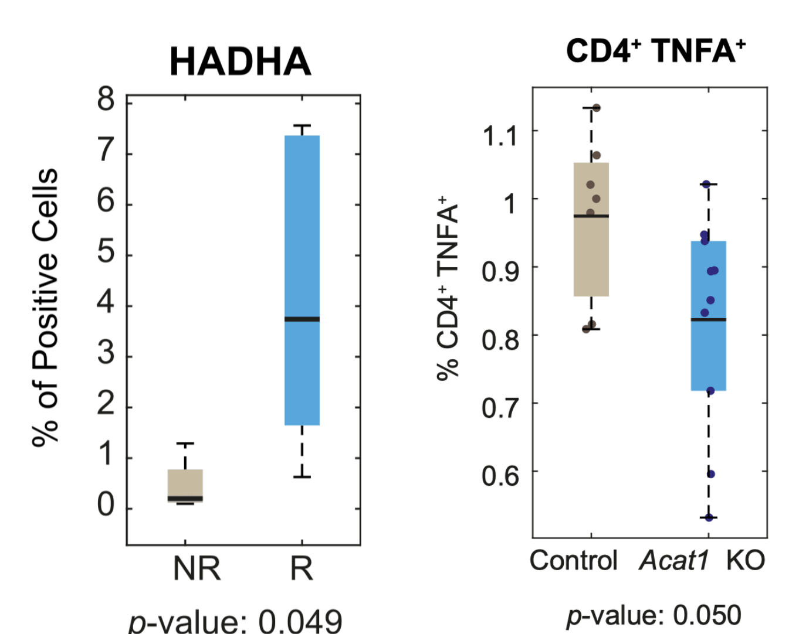
小提琴图（Violin plot）
小提琴图是密度曲线图的变体，有时也与箱线图一同呈现，能够更清晰地展示数据的分布情况。由于其外形与小提琴的形状相似（尤其展示双峰数据时），所以称为小提琴图。通常要较多的数据量，才能呈现出比较好看的小提琴图。
- Mark: line, point
- Channel: position, length
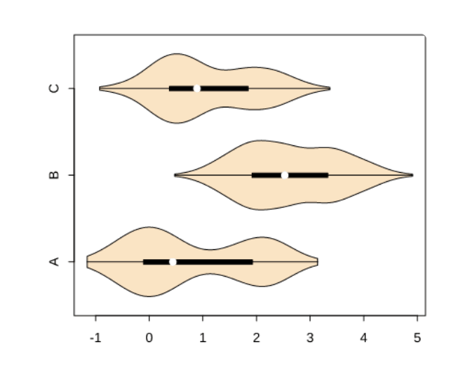
One ordered key, one value
当我们的数据，其中的 Key 有内在顺序时，其呈现方式又可以有所不同。
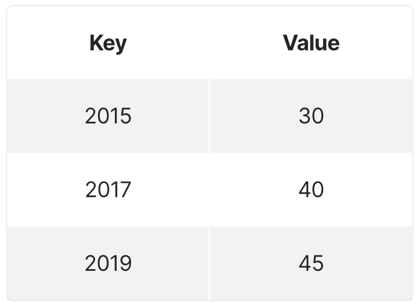
折线图（Line chart）
比方说展示一组随时间（比如年份）变化的数据，一般会用折线图的形式，更容易体现出数据的变化趋势。
- Mark: line, point
- Channel: position
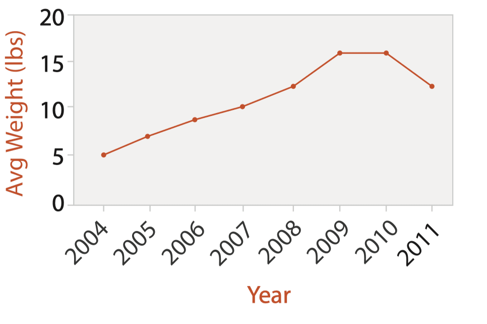
各种常见的基本图片类型就讲到这，我在每张图处都表明了作图利用到的 Mark 与 Channel。比较后就会发现，各种图确实都可以抽象为作图元素的适当组合。
常见问题
以下介绍一些常见的问题与争议，同时包含一些注意事项。篇幅有限，没法将各种问题逐一分析，如果感兴趣也可以与我深入进行交流。
选择柱状图还是折线图
这个问题一般取决于数据的类型，尤其是其中 Key 的类型。
- 如果是类别数据，用柱状图
- 如果是有序数据，用折线图
需注意，类别数据不应使用折线图来展示，而有序数据也能用柱状图表示。
下面两张图展示了性别与身高的关系，在这里 Key 为性别，属于类别数据，因此柱状图可以，但是折线图不合适。因为折线图天生带有一种展示趋势的倾向，会错误地传递出一种「从 Female 到 Male 身高存在上升趋势」，但一般来说性别不会逐渐变化，通常也不会出现身高随着性别变化而改变的情况。
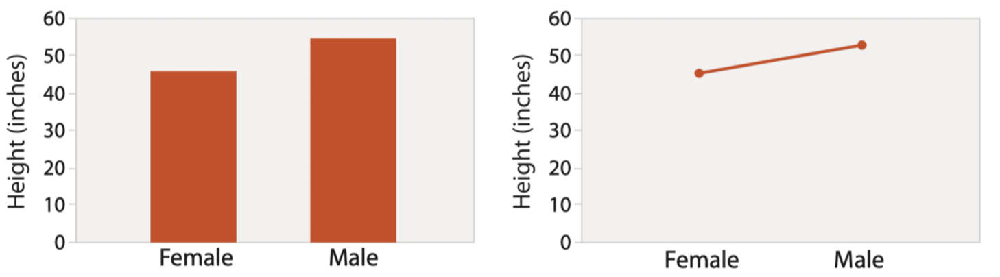
再看下面的图，年龄与身高的关系。柱状图展示了不同年龄段的身高差别，折线图展示出从十岁到十二岁儿童身高有上升的趋势，这就非常合理了。
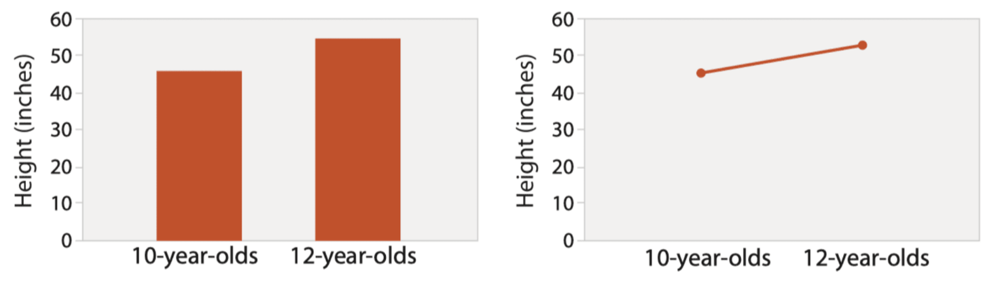
原点是否从0开始
一个作图过程中需要注意的问题：原点是否从0开始？在不同图中这个问题存在一些争议，但是 在柱状图中，原点一定要从0开始。 我们有时也会见到，为了刻意传递出某种结论而在柱状图中不从零开始展示数据的情况。
回想一下前面提到柱状图的时候，我们提到柱状图利用长度来编码数值。正因如此，长度需要与数值以合适的比例关系进行对应，100 是 50 的两倍，因此在线性坐标轴上，对应 100 的柱子长度就该是 50 的两倍长。
而折线图利用位置来编码数值，所以在一些情况下，为了展示出更清晰的局部变化，可以不从0开始。
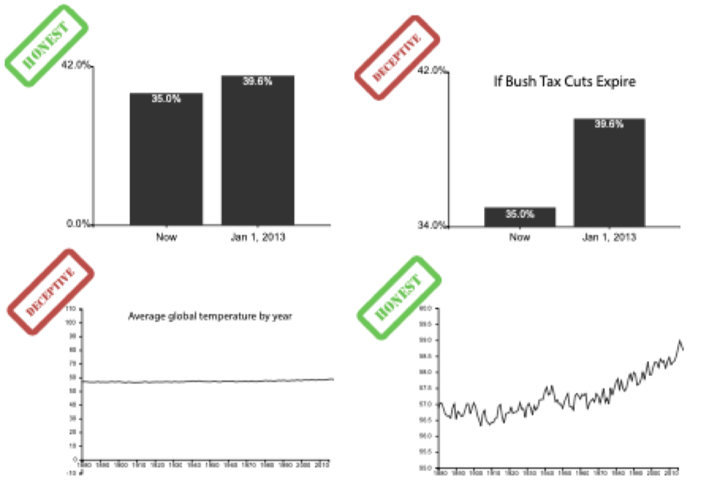
雷达图与饼图
雷达图实际上是极坐标系中的折线图，以到中心的距离编码数值，然而其可读性非常差，绝大多数情况下避免使用。
- 纵坐标对应的数值不易阅读
- 折线的趋势变化不明显
- 折线图不应用来表示没有顺序的分组数据
- 除非周期性数据，否则一组数据结尾和开始处的连接没有实际含义
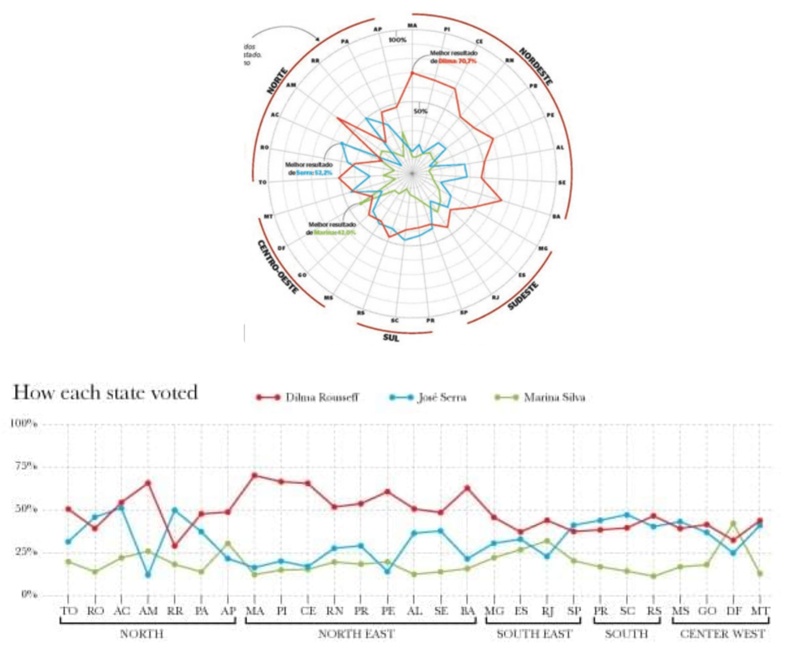
饼图用角度编码数值，给人的感知是角度/面积，可读性也不好。因为人眼对角度或面积辨识能力不强，尤其是相似的角度非常多的时候。
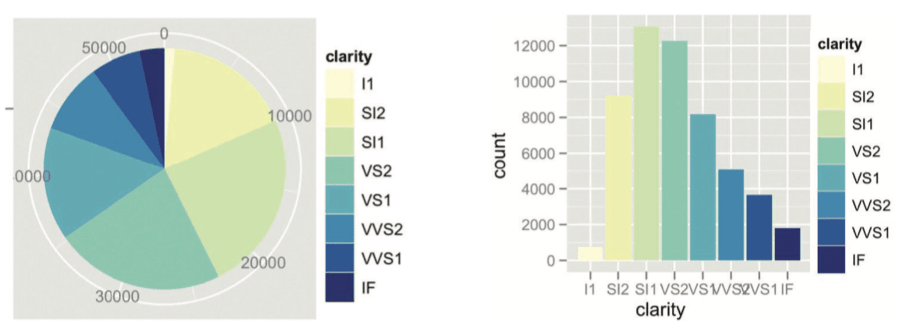
回看一下最开始放的排序图，角度与面积都排在了最后，因此请谨慎使用饼图。如果用，对数据进行排序后再画饼图，可以稍稍让读图变得轻松一点。
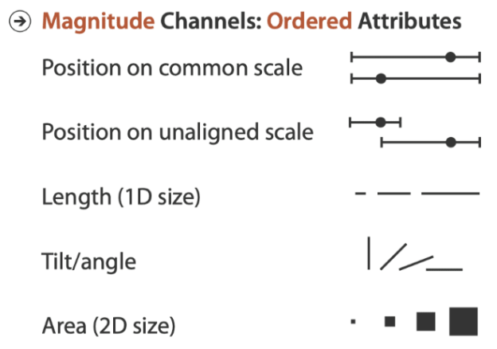
一些奇怪的图
我翻了一些CNS文章，除了热图和树状/网状图，基本都是上面提到的图片类型。其中有些变体形式的图也非常不错，比如下面这张直接展示出原始值及其平均值，又省空间又直观。
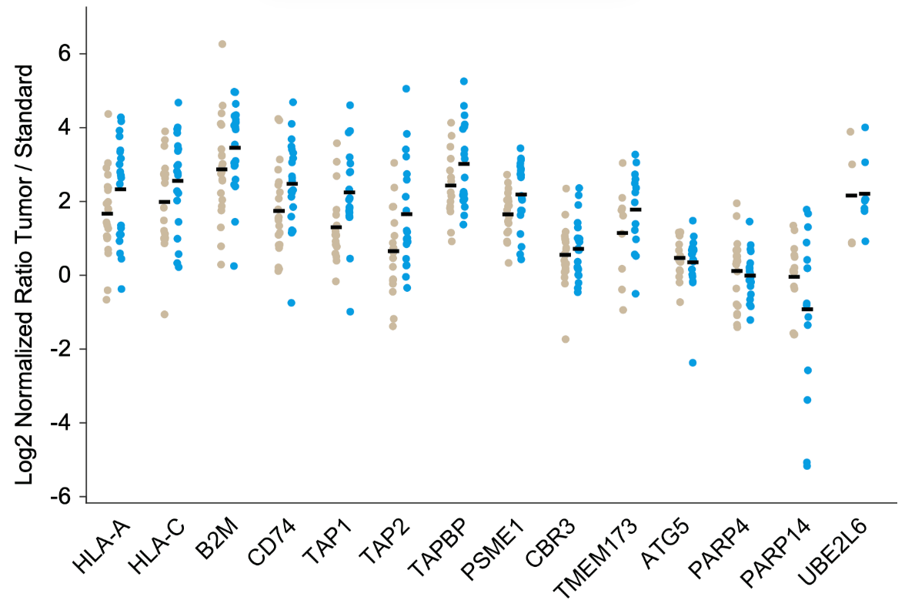
或是下面这种（我画了个示意图），相比于柱状图省去了柱子的部分，同样呈现出平均值和误差线，又比柱状图省下不少空间（柱状图的柱子宽度几乎毫无意义）。
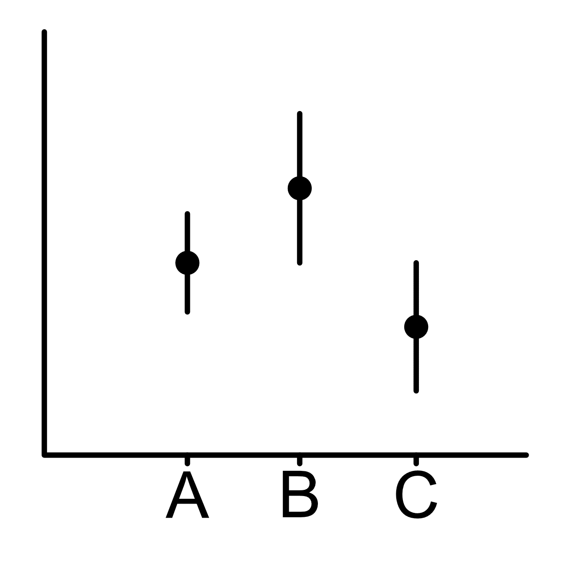
再举个例子，说说如何用图片元素的基本知识，帮助我们读一张图，尤其是如今日益花哨的各种组学图。下面是张呈现出转录组数据的火山图（Volcano plot），一眼看上去还挺炫，让我将其中的各种元素拆分一下：
- 横坐标与纵坐标都是取 log 后的连续型数值，坐标轴不包括离散（分组）数据，因此这是将（x,y）映射到位置的散点图，每个点代表一个基因
- 再看横纵坐标表示的含意，横坐标是 R-NR 数据的比值，因此越靠右表明比值越大，越靠左则比值越小
- 图中的两条曲线划定了一定范围，因此作为比较数据的阈值
- 数据点还映射到了不同的颜色，灰色是没有达到阈值的数据，黑色点达到阈值，其中又有些选出的基因，被标注以不同颜色，应该是依照某个其他因素进行了分组
那么，再接下去看看上下文有没有提到这些颜色代表了什么分组，就清楚它是要讲什么了。
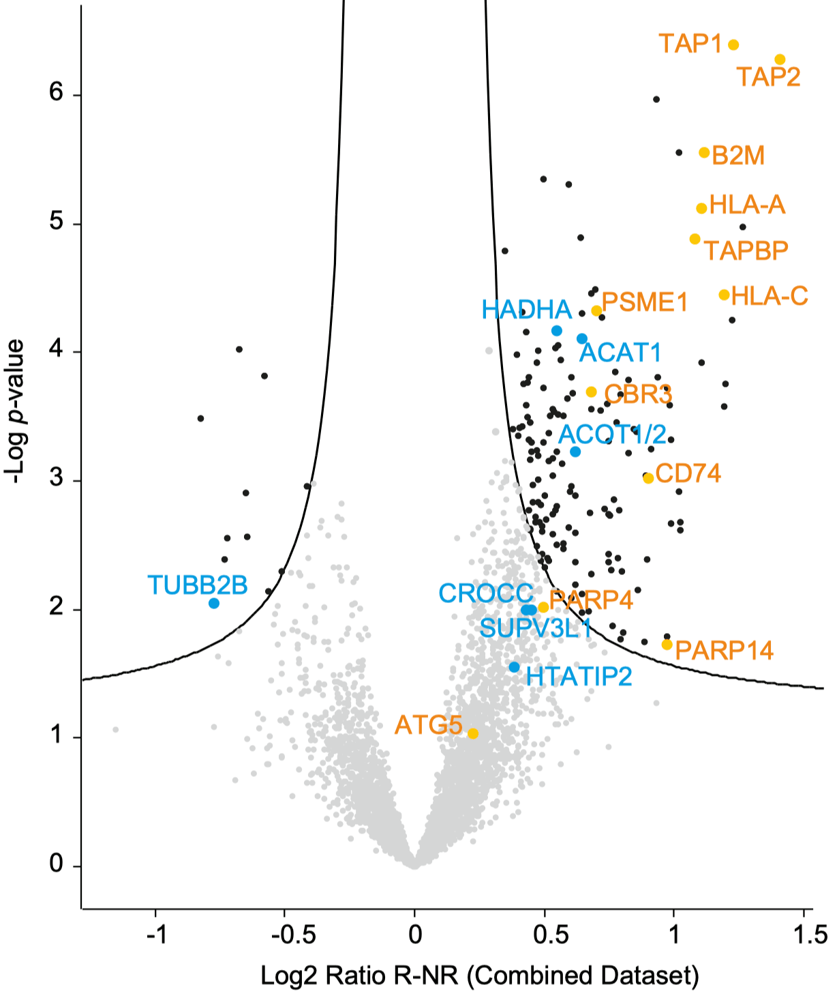
好了，这篇文章就写到这，我们下次再见。